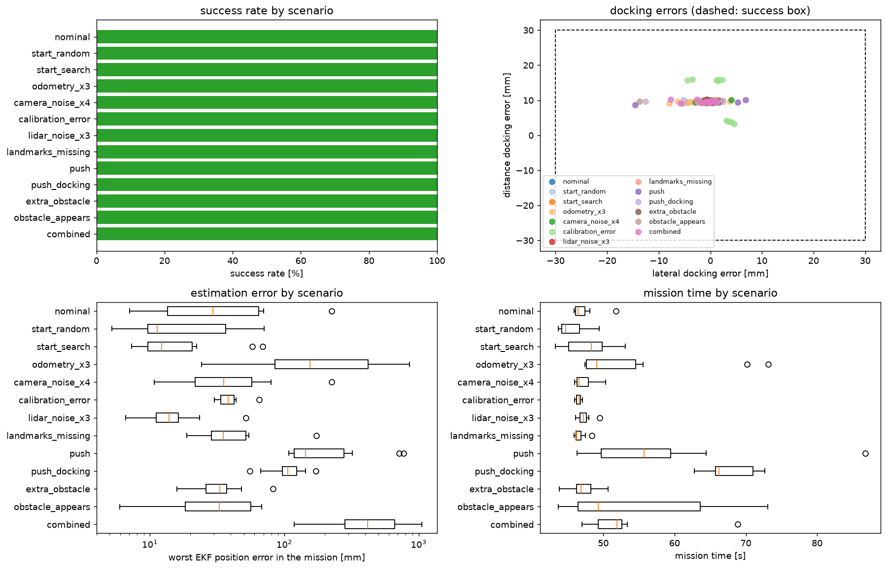
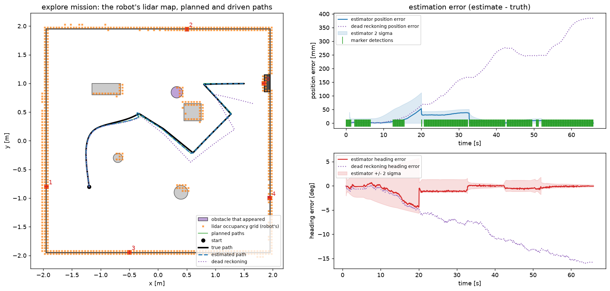
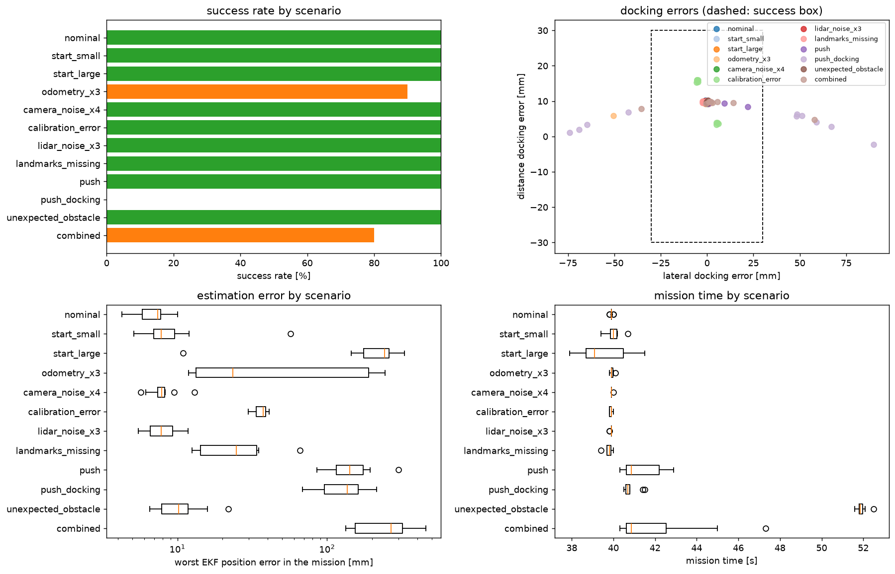

Criterion E
Performance under disturbance and noise
tests/test_robustness.py).| Scenario | Success | Lateral dock | Heading | EKF RMS | EKF max | NEES | Recov. | Plans | Clearance | Time |
|---|---|---|---|---|---|---|---|---|---|---|
| nominal | 10/10 | 0.5mm | 0.1° | 18mm | 224mm | 1.69 | 0.0 | 1.1 | 3.5cm | 47s |
| start_random: random pose in front of the marker | 10/10 | 0.9mm | 0.2° | 9mm | 71mm | 1.99 | 0.0 | 1.0 | 8.2cm | 45s |
| start_search: random heading, must search | 10/10 | 1.4mm | 0.2° | 8mm | 69mm | 1.62 | 0.0 | 1.2 | 6.2cm | 48s |
| odometry_x3: ±2.5% radius, 3× slip | 10/10 | 3.6mm | 0.6° | 91mm | 855mm | 25.03 | 1.7 | 2.8 | 3.3cm | 54s |
| camera_noise_x4 | 10/10 | 1.2mm | 0.2° | 19mm | 224mm | 1.95 | 0.0 | 1.2 | 5.5cm | 47s |
| calibration_error: focal length about 2% off | 10/10 | 3.0mm | 0.5° | 19mm | 65mm | 100.35 | 0.0 | 1.0 | 8.6cm | 47s |
| lidar_noise_x3 | 10/10 | 0.8mm | 0.1° | 6mm | 52 mm | 1.39 | 0.0 | 1.0 | 8.4 cm | 47 s |
| landmarks_missing: only the reference and dock markers | 10/10 | 0.8mm | 0.1° | 16mm | 173mm | 1.38 | 0.0 | 1.1 | 8.5cm | 47s |
| push: 15–20N sideways while driving | 10/10 | 3.3mm | 0.6° | 81mm | 775mm | 57.95 | 1.3 | 3.0 | 3.4cm | 58s |
| push_docking: the same shove while docking | 10/10 | 3.6mm | 0.6° | 13mm | 171mm | 55.91 | 1.9 | 2.0 | 6.3cm | 68s |
| extra_obstacle: unknown cylinder on the way | 10/10 | 0.6 mm | 0.1° | 11mm | 83mm | 1.49 | 0.0 | 1.8 | 3.7cm | 47s |
| obstacle_appears: in front of the robot mid-route | 10/10 | 2.3mm | 0.4° | 11mm | 68mm | 1.42 | 0.0 | 2.3 | 3.5cm | 54s |
| combined: start, odometry, camera noise and a push | 10/10 | 2.1mm | 0.3° | 132mm | 1051mm | 118.58 | 3.3 | 3.5 | 4.7cm | 53s |
Lateral and heading are mean |error| at the dock. EKF max is the worst over all 10 trials. Recov. = lock-out recoveries per mission, plans = paths planned per mission, clearance = closest approach beyond the 0.25 m circle that contains the chassis.


The obstacle came within 1.2 cm of the robot's 0.25 m circle - the chassis itself is smaller so there was no contact. It appears while the robot is driving at up to 0.15 m/s, and the new path has to start from where the robot already is. No spline between the new obstacle and the red box kept the full margin, so the planner fell back to straight legs. That is the planner's designed last resort, and here it is visible.
The first full run of the explore mission scored 104/130. Every scenario that does not move the robot behind its odometry's back passed. These are the tests that failed:
The common cause was due to three combined modules. After the disturbance, the only marker in view near the dock is the dock marker. One marker cannot observe the rotation about it (A), so the estimate arrived at the pre-dock pose wrong. The Week 9 law then docks off the normal because it cannot remove a sideways offset (D). No single module is wrong however where they meet is what caused our pipeline's weakness.
| Fix | Module |
|---|---|
| LiDAR wall-line heading measurement so one marker plus its wall observes the full pose | estimation (C) |
| Back off and re-approach when the estimate shows the robot off the dock normal | control (D) |
| Back off by reversing out first, and limit spline curvature to 15 /m. The first back-off tried a U-turn in 0.3 m, crawled at 1 mm/s, and timed out in 9 of 10 push_docking trials. | planning |
With all three on the same seeds: odometry_x3 went from 7 to 10/10, push from 4 to 10/10, combined from 4 to 10/10, and push_docking from 0 to 10/10.
Earlier development failures were fixed the same way. These were all found through testing:
The EKF lock-out recovery came from the "route" mission's trials. A 17 N push and a 0.2 m/15° start error both failed with over 900 correct measurements rejected by the gate because after an unseen jump P is still confident. With the recovery, both were able to dock, and it never fires falsely in nominal, noise, calibration, landmark or obstacle trials.
| Route mission (12 scenarios) | Explore mission (13 scenarios) | |
|---|---|---|
| Successful | 107/120 | 130/130 |
| Knows in advance | start pose, all 5 markers, fixed route | only the dock's offset from one marker |
| Nominal time | 40s | 47s (including about 5 s to localise and look) |
| push / push_docking | 10/10 / 0/10 | 10/10 / 10/10 |
| odometry_x3 / combined | 9/10 / 8/10 | 10/10 / 10/10 |
| Obstacles | 10/10 (local detour on a fixed route) | 10/10 on the way, 10/10 appearing (replanning) |
The explore mission knows less but is more robust, because of three things the route mission does not have: the wall-line heading (full pose from one marker), the dock back-off, and replanning on its own LiDAR map.
A measured trade-off in the route mission: The spline controller scored 107/120, against 110/120 for straight segments on the same route and seeds. All three extra failures were docking off target after bad odometry or a push. The spline reaches the pre-dock pose about 10 s sooner and turns less on the spot, so it collects about a third fewer wall-marker updates (210 against 309) and has less time to re-converge. At 10 trials per scenario a 3-trial difference is within trial-to-trial variation but the mechanism is consistent with the logged data.
